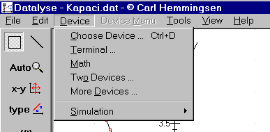
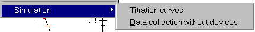
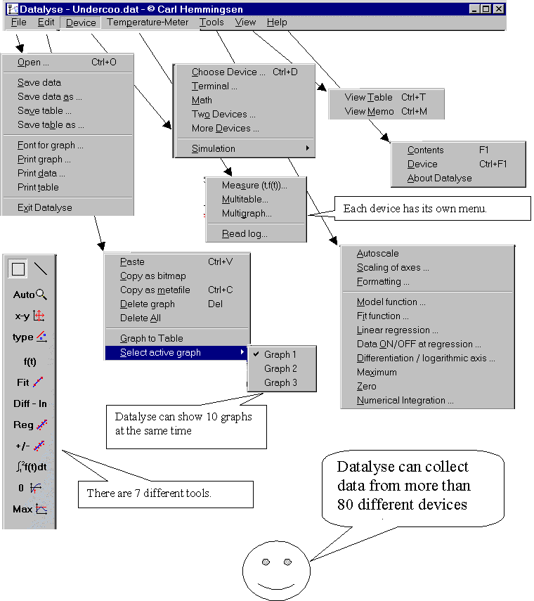

The topic »Devices« on the main menu of Datalyse contains:

A device (or Terminal) can be chosen, if one of the ports COM1 to COM8 is available.
Two devices can only be chosen, if two of the ports COM1 to COM8 is available. More devices can be chosen, if one or more of the ports COM1 to COM8 is available. See also How to use Datalyse on a USB computer and how to use Datalyse on a Macintosh.
If you do not start by opening a file, you will probably start either here or in the help. Notice that you can go directly to the device help screen with Ctrl+F1.
The lowest menu point contains two options:
Simulation of a theoretical model for titration curves. The menu point can be used without having loaded or measured a titration curve.
If you click on »Data collection without devices«, an internal flag in Datalyse is set, which allows you to choose devices, without actually having connected them, and to »measure«. The measurements won't make any sense, but you can examine the menus of the devices. This can be useful if you are getting prepared for the exercises of tomorrow
When a device is chosen, its menu is inserted into the main menu.
Menu structure, when the device »Temperature-Meter« is chosen and a file is opened:
